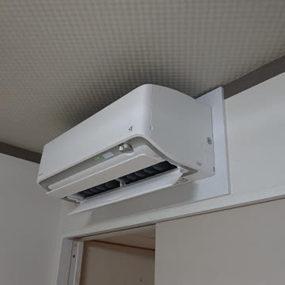
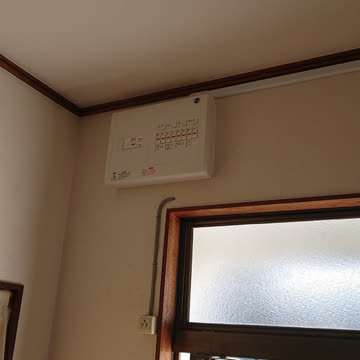
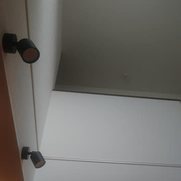
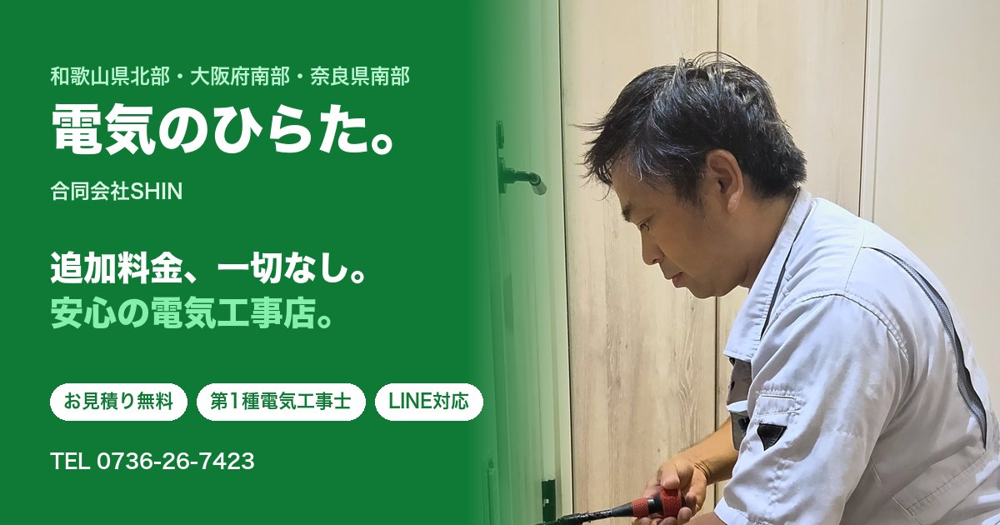

職人さん・地域のお店のホームページ制作
工事の写真をインスタに投稿するだけで、ホームページの施工事例が増えていく。
サーバー代のかからない、むずかしい話ぬきのホームページを作ります。
写真に「#施工事例」と付けて投稿すると、1日1回ホームページに自動で反映。パソコンもむずかしい操作もいりません。

エアコン設置 #施工事例
施工事例


Cloudflareの無料の枠で公開。毎月の保守料もありません。
アドレスも公開の場所も、お客さんの名前で作ります。
名刺やチラシはそのまま。会社のメールにも影響なし。
わかるまで何度でも説明します。使い方の資料もお渡しします。

実績 ／ 電気工事店（和歌山県橋本市）
アメブロからお店専用のホームページに。施工事例はインスタから自動で増え、毎月の固定費はワンコイン以下です。
相談は無料です。「作ったほうがいい？」くらいの段階でも大歓迎。
右のQRコードから、相談フォームへどうぞ。
ゆーすけのホームページ制作
相談フォームはこちら